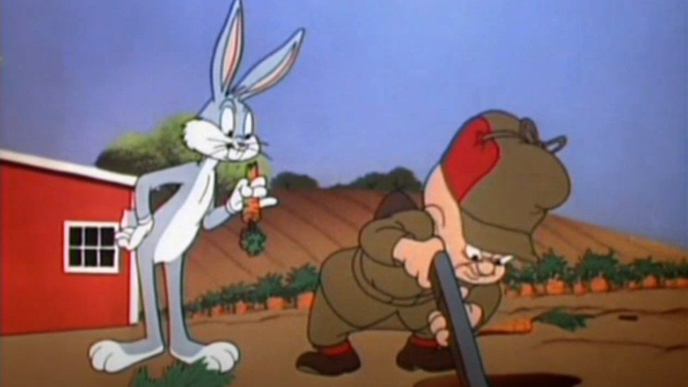
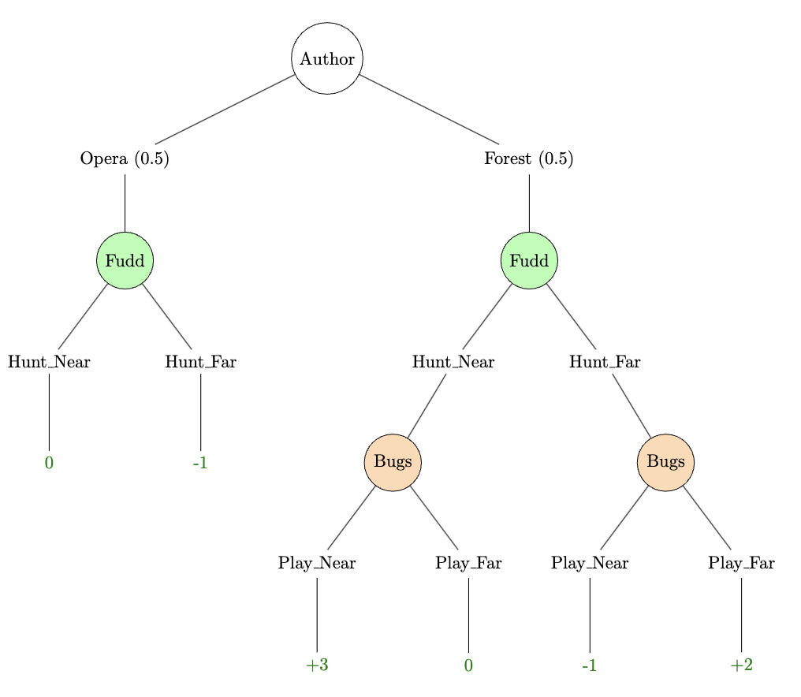

#1: Kuhn Poker | Reading
Hunting Wabbits Game
(This game is modified from Lisy et al. 2015.)

We developed this game to show concepts in games with imperfect information that are applicable to our first challenge. Imperfect information games involve hidden information, which are things like opponent cards in poker or enemy location in the Hunting Wabbits game. In perfect information games like chess, all information is available to both players.
This game has one chance player (the Author), one maximizing player (Fudd) and one minimizing player (Bugs). Fudd and Bugs are in a long-term, all-out war, and so any energy that Fudd wastes or saves is a gain or loss for Bugs; our game is zero-sum.
First, the Author will choose whether to write an episode where Bugs is at the Opera (50%) or in the Forest (50%). Fudd cannot tell what the Author has chosen.
Next, Fudd will decide whether to Hunt_Near or Hunt_Far. If he chooses Hunt_Far, he takes -1 value for the extra effort.
Bugs knows whether the Author wrote him into the Opera or Forest, but he does not know Fudd’s hunting location. If the Author gives him the Opera, Bugs has no choices to make and the game ends after Fudd’s action. If Forest, Bugs will decide whether to Play_Near or Play_Far. If he plays in the same location as Fudd is hunting, Fudd gets +3 value for a successful hunt (for a total of +2 in the Hunt_Far action due to the -1 value for the extra effort). If they are in different locations (or if Bugs is at the Opera), Fudd will get 0 value for an unsuccessful hunt (-1 for the Hunt_Far misses).
Putting it all together, the payoff structure of this game is:
| Author | Bugs/Fudd | Hunt_Near | Hunt_Far |
|---|---|---|---|
| Opera | 0, 0 | +1, -1 | |
| Forest | Play_Near | -3, +3 | +1, -1 |
| Forest | Play_Far | 0, 0 | -2, +2 |
The tree structure is as follows with the payoffs written from the perspective of Fudd:

If Fudd knows he’s at the Opera, then he must prefer to Hunt_Near to get a value of \(0\) instead of \(-1\) for Hunt_Far, but since he doesn’t know his location, he must take both scenarios into account.
Note that Bugs’s optimal actions depend on Fudd’s Opera strategy even though that outcome cannot be reached once Bugs is playing since Bugs only plays in the Forest! For example if we kept the same game tree except Fudd had a \(+100\) Opera Hunt_Far payoff, then he would always Hunt_Far. Bugs would see this and it would affect how Bugs plays in the Forest scenario.
Concept: Information Set
In a perfect information game, we can draw a tree of the possible states the game can be in. Every time a player is called to take an action, they will know what node they are at, and what node they will go to with each legal action.
In an imperfect information game, we can still draw that tree, but now a player might be called to take an action without knowing what node they are actually at. Instead, there will be a set of one or more nodes that are indistinguishable to that player based on what they have seen so far, and they will have to take an action knowing only that they are in that set. Such a set of nodes is an information set or an infoset.
The infosets contain information about the player and what actions have been seen so far. For example, [Fudd] is an infoset that contains the nodes [Fudd, Forest] and [Fudd, Opera]. (Just [Fudd] because no other actions/information have been revealed to Fudd at this point.)
A player strategy is a rule that says, for every information set that player will face, what action or (random choice of actions) that player will take. For a game like Hunting Wabbits or Kuhn Poker (the Challenge 1 game), we can list every information set and its probabilities. For a more complicated game, we might write our strategy as a computation that will output probabilities based on inputs and an algorithm.
Concept: Expected Value
Once we’ve assigned definite values to the ultimate outcomes, the expected value, or EV, of a situation is the value of each outcome weighted by the probability of that outcome.
In imperfect information games, we consider probabilities over two different sources of uncertainty, after assuming a particular P1 strategy and P2 strategy:
- Uncertainty about which node we are actually in, given that we know that we’re in one of multiple nodes that we can’t tell apart. The probabilities of being in node 1, node 2, … of an information set can be calculated by the probabilities of strategies upwards in the game tree (and the probabilites of chance events upwards in the game that have already happened). For example, Fudd doesn’t know if he’s in the Forest or Opera at the beginning.
- Uncertainty about what will happen after we go to a node downwards in the game tree, coming from chance events or strategy probabilities in the players’ following actions. For example, after Fudd selects Hunt_Near, there is uncertainty about the outcome since it depends on Bugs’s actions.
We will focus on zero-sum two-player games, so the value to one player is simply the negative of the value to the other. Therefore, we can represent value in the game as a single number that the maximizing player wishes to make positive and the minimizing player wishes to make negative.
We will focus on maximizing (or minimizing) expected value as our goal for all of session 1. One thing that makes it natural to care about expected value is that it’s usually the best way to predict what your score will be after a very large number of games, whether they are the same game or different from each other.
Concept: Regret
For a given P1 strategy and P2 strategy, a player has regret when they take an action at an infoset that was not the highest-EV action at that infoset. The amount of regret is the difference between the highest-EV action and the selected action.

What is the regret for each action?
| Action | Regret |
|---|---|
| A | |
| B | |
| C |
There are other things that “regret” can mean in English, that are separate from this technical concept:
Based on what chance events later happened, I wish I had taken a different action instead.
I was wrong about what strategy my opponent was playing, and I wish I had taken a different action instead.
However, we will use “regret” as a technical concept to mean how much worse actions that are not-highest-EV perform compared to highest-EV actions given a particular P1 strategy and P2 strategy.
Exercises
Say that Fudd chooses to Hunt_Near with probability \(p\).

At the Bugs infoset where Bugs knows he’s in the Forest, what is the expected value of choosing to Play_Near?
What is the expected value of choosing to Play_Far?
(Reminder: The payoffs are from the perspective of Fudd and are the opposite for Bugs.)